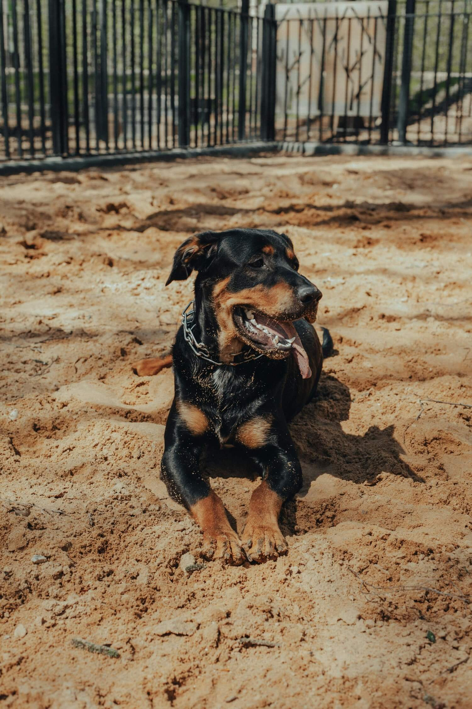
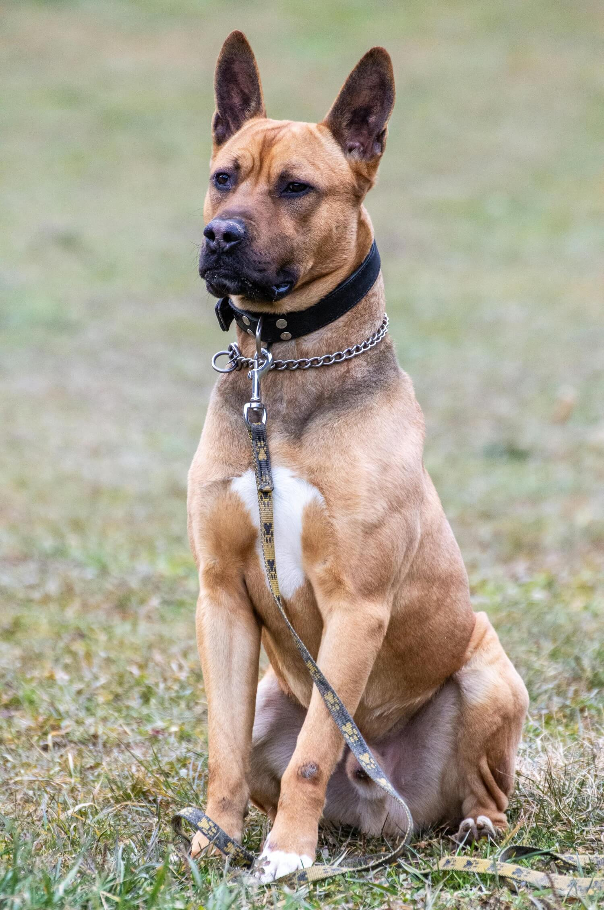
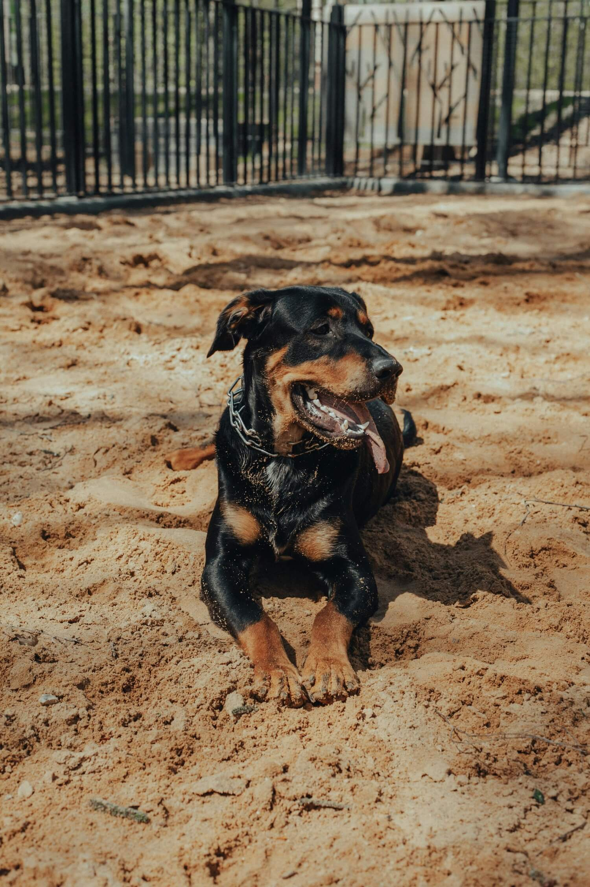
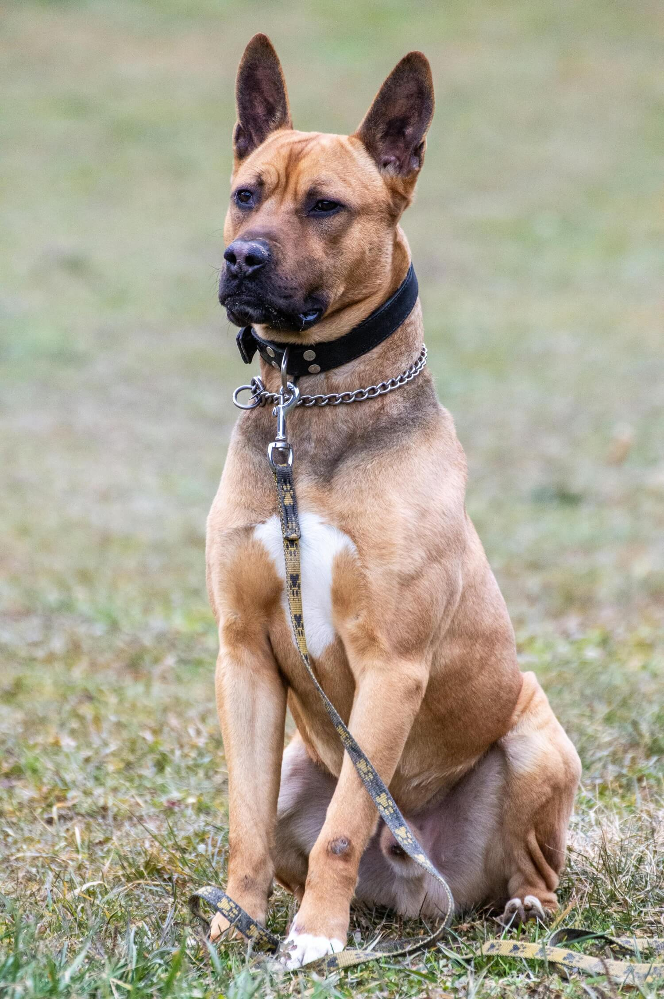

Training is not the only thing to pay attention to. It is important to choose the right dog for your needs. Guard dogs can be divided into three groups: Personal protection dogs, Livestock guardian dogs and Guard dogs.
Personal protection dogs:
In general, any dog can be a personal protection dog, but the bigger the dog, the bigger threat deterren. They need an owner nearby to give them orders. They are socialized and affectionate to family members. Commonly used personal protection dogs: German Shepherd, Rottweiler, Akita, Boxer, Staffordshire Bull Terrier, Great Dane, Doberman Pinscher, Golden Retriever.
Livestock guardian dogs:
They are breed to protect livestock from predators. They will be aggressive towards predators, but at the same time gentle and friendly towards people. Commonly used livestock guardian dogs: Great Pyrenees, Anatolian Shepherd, Maremmano-Abruzzese Sheepdog, Appenzeller Sennenhund, Australian Shepherd.
Guard dogs:
They are generally trained by professionals. They are mostly not socialized because their goal is to defend, attack or kill on command. They are also trained to perform their duties without the owner being around to say so. Depending on their duties, they are divided into three groups: Alarm dogs, Sentry dogs and Attack dogs.
Alarm dogs:
Their duty is to guard a certain place from intruders, and to warn owners or deter intruder by loud and deep barking. They are generally not trained to attack. Commonly used alarm dogs: Bloodhound, Bassett Hound, Great Dane, Golden Retriever, German Shepherd.
Sentry dogs:
Unlike alarm dogs, sentry dogs will also attack and/or detain an intruder until the owner arrives. Commonly used sentry dogs: German Shepherd, Rottweiler, Akita, Boxer, Staffordshire Bull Terrier, Great Dane, Doberman Pinscher, Golden Retriever.
Attack dogs:
Used by police, military and private security. Trained to attack and kill on command or without it if they themselves recognize the danger themselves recognize the danger. Trained to sniff out drugs, explosives or to track a person/animal. Commonly used guard dogs: German Shepherd, Belgian Shepherd, Labrador Retriever, Doberman Pinscher.
 


